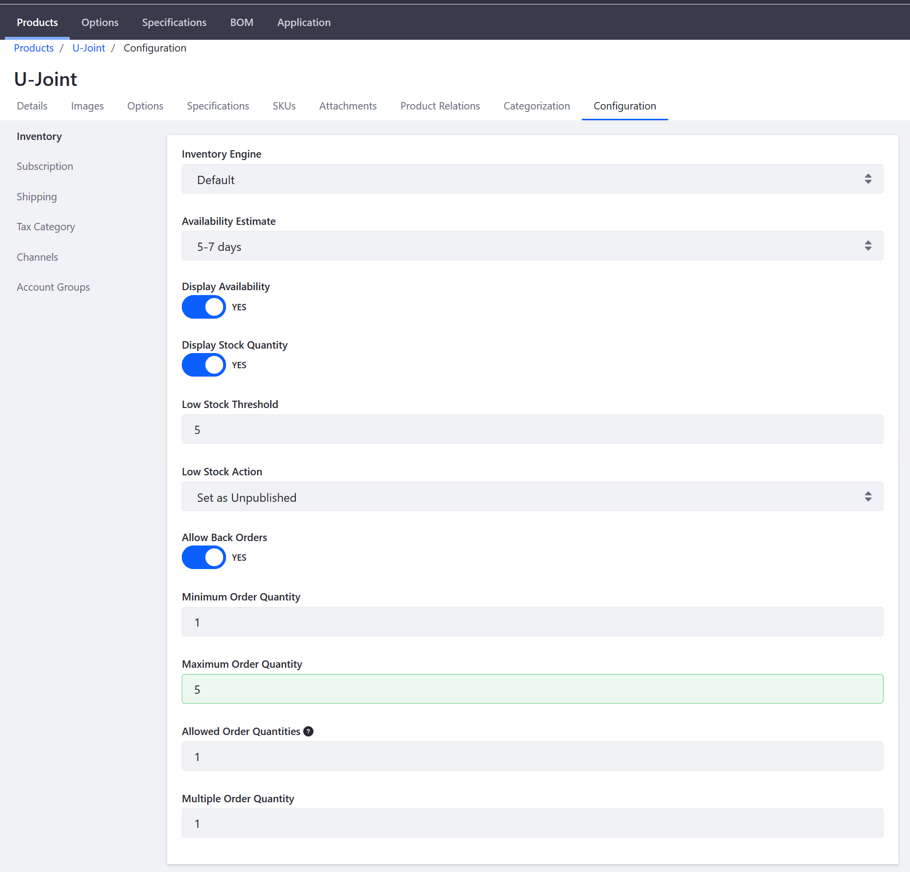

Low Stock Activity¶
This article documents how to set up automated actions for when product inventory falls below a specified threshold. Out-of-the-box, Liferay Commerce allows users to automatically set products as unpublished when they reach the defined inventory threshold. Store owners may also configure the catalog to display remaining product quantity in inventory.
To configure a Low Stock Activity:
Navigate to the Control Panel → Commerce → Products.
Click on a product (for example, U-Joint)
Click the Configurations sub-tab.
Enter the following:
- Inventory Engine: Default
- Availability Estimate: 5-7 Days
- Display Availability: YES
- Display Stock Quantity: YES
- Low Stock Threshold: 5
- Low Stock Action: Set as Unpublished
- Allow Back Orders: Yes
- Minimum Order Quantity: 1
- Maximum Order Quantity: 5
- Allowed Order Quantities: 1
- Multiple Order Quantity: 1

Click Save.
The Low Stock Activity for this product has been configured. In the future, should the number of stock fall below 5, the 「U-Joint」 product will be unpublished.